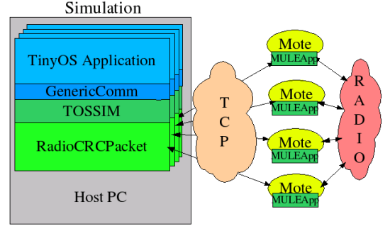

MULE - Hybrid Simulation for Motes
1. Overview
MULE is an add-on to TOSSIM
that allows hybrid simulation. Instead of simulating the
functionality
of the functionality of mote radios as TOSSIM has done in the past,
MULE
enables the user to use real, physical motes to handle all the radio
communications, while still retaining the ease-of-use and debugging
features of a simulation running on a PC. This allows easy simulation
and debugging of complex TinyOS
applications, but at the same time has much greater fidelity than
software simulation of radio communications. All the interesting
behavior of the low-power radios on motes are present: collisions,
backoffs, MAC contention, the hidden-terminal effect, real
environmental interference, etc. It is no longer necessary to tweak
your simulation setup to get the desired behavior -- simply arrange
your motes as you need them to be, and the real-world radios will do
all the work.
We have written a tech report on MULE: TR-KSU-CS-2004-02.
If you wish to view a presentation on MULE and TDB,
you can look at this PowerPoint
presentation given at the Project Echelon May IPT at Ohio State.
2. Architecture
MULE consists of two components: MULEApp, which is a simple transceiver
program that runs on the real motes, and MULEPacket, which is new
implementation of RadioCRCPacket that runs on the host PC. MULEPacket
coordinates communications with the physical motes and synchronizes
TOSSIM's simulated time with the actual time it takes to perform the
communications. Figure 1 shows how the components communicate with each
other.

Figure 1: Simulation Architecture
3. Usage
3.1 Requirements
MULE requires the following:
- TinyOS version
1.1 or higher and associated tools (NesC, etc.)
- TOSSIM
- 1 Mica2 (or compatible) mote for each simulated mote, connected to
a programming board (serial or ethernet)
3.2 Installation
Installing MULE is fairly simple, provided that you have the necessary
equipment and software installed. You can always get the most recent
version of MULE by downloading http://deneb.cs.kent.edu/mule/download/mule-current.tar.gz.
This contains both MULEApp and MULEPacket, as well as a test
program called MULETest.
Once you have downloaded and unpacked the archive, you should have 3
subdirectories, with several NesC sources in each. The directories
should be named MULEApp, MULEPacket, and MULETest. Make sure that you
have your $TOSDIR environment variable set properly - if TinyOS is
installed at /opt/tinyos-1.x, then $TOSDIR should be
/opt/tinyos-1.x/tos.
Go into the MULEApp directory, and run the command 'make mica2'. Once this
compiles, install it on each of your Mica2 motes. Make sure that you
give each one a unique address, or strange behavior may occur. Note
that it is not necessary for the mote IDs to start at 0, or for them
to be in any particular order - you can use arbitrary values, provided
that there are no duplicates.
Next, enter into the directory of the application you wish to run under
MULE. For our example, we will use MULETest. Run the command 'make pc'. Assuming everything
compiles properly, you now have an application which will run under
TOSSIM using MULE. There's only one more thing to do: create your
configuration file.
The configuration file is a simple text file with one address/port location
per line. Since MULE talks to the motes running MULEApp either over TCP
(using the EPRBs) or over serial connections, it is necessary for MULE to
know what the addresses/locations of the
motes are. If you have 2 motes on ePRBs with the addresses mote01.localdomain, mote02.localdomain, and
one on a serial programmer at /dev/ttyS0,
then you should
create a file in the current directory named 'hybrid.conf' with the following
structure:
mote01.localdomain
mote02.localdomain
file:/dev/ttyS0
(Note: it is not necessary to name the file 'hybrid.conf'. If
you wish to use a different file, simply set your $HYBRIDCONF
environment variable to the location of the file to be used.)
Once everything is set up, run the following command to start up
MULETest:
$ DBG=usr2,usr1 ./build/pc/main.exe -b=.3 3
This instructs TOSSIM to only print out the debugging messages on
channels USR1 and USR2, boot all the motes in the first .3 seconds of
simulated time, and run with 3 motes. Feel free to change these
parameters. When the simulation is running, you will see information
printed out about which mote(s) are sending, which have to back off,
how many packets are lost, etc. In addition, on the real motes, you can
gain some information by watching the LEDs: the green LED is toggle for
every send, and the red LED for every receive.
4. Troubleshooting
If there are any problems, please contact me (David Watson). My email
address is dgwatson@kent.edu,
and my phone number at work is 330-672-9107. I will be more than happy
to assist you in any way.